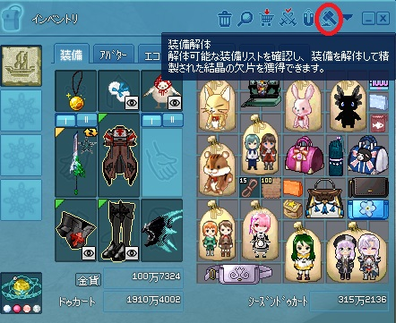
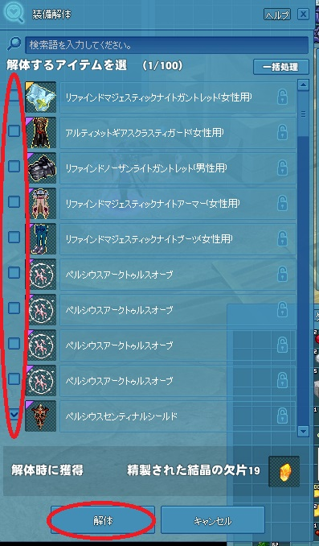
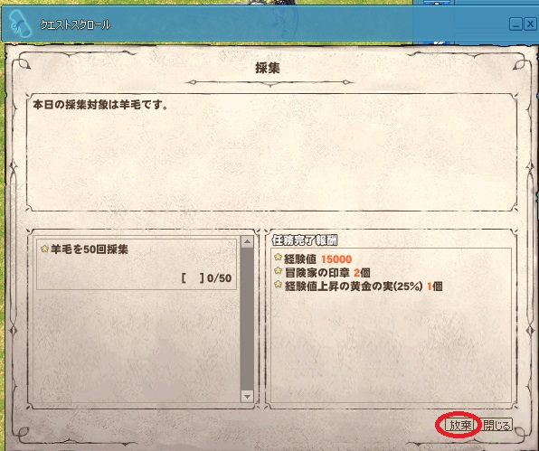
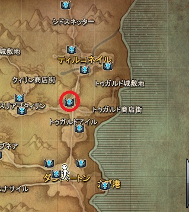

・ダンジョンで宝箱から取れた戦利品の装備でカバンがパンパンです
・プレシーズンのイベントカバンがどこにあるのかわからない
・光る玉ダンジョンへ入れない
・フィニージェムやフィニー笛をどこに売ればいいのかわからない
・一日クエストの採取に指定されてる物がめんどくさい
・序盤の金策が知りたい
・ダンジョンで宝箱から取れた戦利品の装備でカバンがパンパンです…捨てるしかないのか？
捨てないで！下の画像のようにメインインベントリの右上にある槌のアイコン、装備解体をクリックすれば解体出来て
その解体で得られる欠片は光る玉とベテランダンジョンのレアドロエンチャントに変えます！
しかも装備継承するときに使う材料でもあります！


・プレシーズンのイベントカバンがどこにあるのかわからない…
下の画像のようにメインインベントリの右上にある三角をクリックして
さらに赤い円でマークしてるカバンアイコンをクリックすれば出てくるよ！
・光る玉ダンジョンへ入れないです…
間違ってハードダンジョンアルビのロビーに入っていませんか？
光る玉ダンジョンへ入れるのは下の画像のような黄色に光ってる通常アルビロビーです！
・フィニージェムやフィニー笛をどこに売ればいいのかわからない…
マグメルに入ってハチミツ湖の反対側にいる鹿、フィオナトです！
会話して取引を選択→フィニージェム売りは「商店を開く」で一般のアイテム販売と同じで、フィニー笛売りは「フィニーペットの笛販売」！
・一日クエストの採取に指定されてる物がめんどくさい…
その採取クエストを放棄して、別のチャンネル移動するかリログインすれば別の採取物に変えるよ！

・序盤の金策が知りたい
トゥガルドアイルの伐採所で薪を集めるといいよ！近くにいるトレイシーから薪用斧を買えば(※伐採用斧じゃなく！)、周囲にある木挽き台で採取できるよ！
もしくは各町の聖堂で、司祭に話して「会話」を選択して、指定の時間で「アルバイトについて」で話してバイトすれば、祝福ポーションが貰えてそれを売ります！
